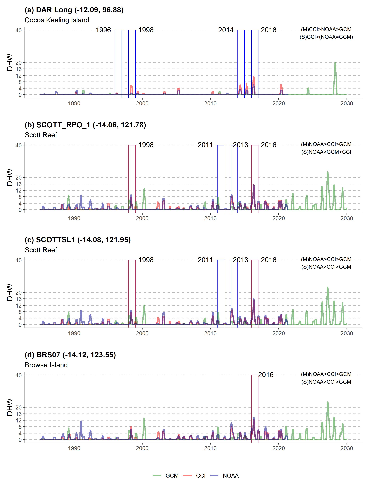
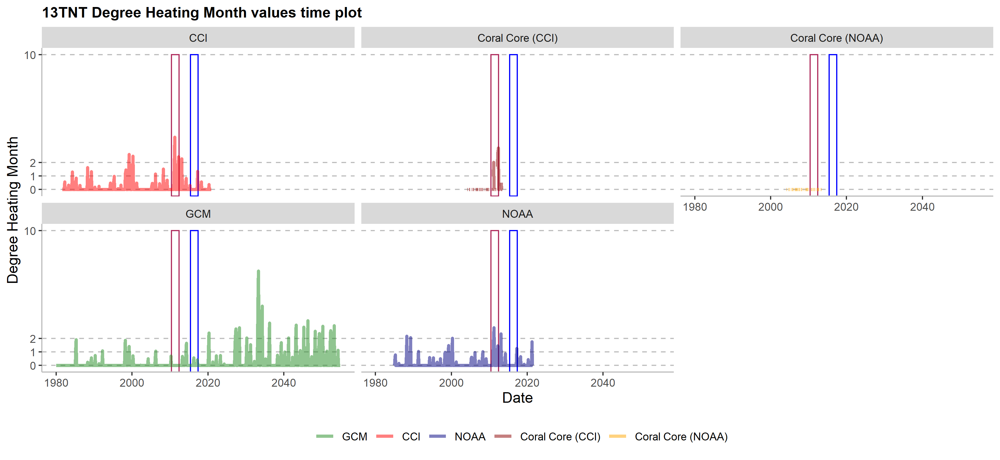

Do Thermal Data Sources agree when monitoring Coral Bleaching ?
Vanessa Hui Fen Neo 1, 2, 
hfn3@leicester.ac.uk
Joseph Maina Mbui 1
joseph.mbui@mq.edu.au
Jens Zinke2, 3, 4 Thomas Fung5 Chris Merchant6, 7 Kyle Zawada1 Hedwig Krawczyk2
1 School of Natural Sciences, Macquarie University, Sydney, NSW, Australia
2 School of Geography, Geology and the Environment, University of Leicester, Leicester, UK
3 Molecular and Life Sciences, Curtin University, Bentley, WA, Australia
4 Australian Institute of Marine Science, Townsville, QLD, Australia
5 School of Mathematical & Physical Sciences, Macquarie University, Sydney, NSW, Australia,
6 Department of Meteorology, University of Reading, Reading, UK,
7 National Centre for Earth Observation, University of Reading, Reading, UK
Introduction

Thermal stress is a major cause of this process towards coral mortality [1].
Climate change and rising sea surface temperatures (SST) have resulted in mass global coral bleaching events.
Monitoring changes in coral bleaching SST warning metrics known as Degree Heating Weeks (DHWs) or Degree Heating Months (DHMs), is crucial for predicting reef health for appropriate conservation actions.
Different limitations exist for different SST data sources, but are often used without understanding the difference. Hence, there is a need to compare how they agree with each other.
Objectives
Methods

Figure 1: Western Australia Study Sites
Four data sources:
1) NOAA Coral Reef Watch 5km daily SST.
2) CCI 5km daily SST.
3) ACCESS Model daily SST for Australia (GCM).
4) Coral Core monthly SST Proxy Ratio.

Figure 2: Calibration of Coral Core Thermal Proxy Sr/Ca with satellite data
![DHW and DHM Calculation Method [2], [3]](DHW%20and%20DHM%20method.png)
Figure 3: DHW and DHM Calculation Method [2], [3]
Results

Figure 4: Degree Heating Weeks Time Series with known bleaching events in Cocos Keeling Island, Scott Reef and Browse Island. Red and Blue boxes represent known severe and moderate coral bleaching events respectively [4]

Figure 5: Degree Heating Months Time Series with known bleaching events in Ningaloo Reef. [4]
Takeaways
SST data differs in coral bleaching metrics and event prediction
References
[1] Ainsworth, T. D., & Brown, B. E. (2021). Coral
bleaching. Curr Biol, 31(1), R5-R6.
[2] Liu, G., … & Strong, A.
E. (2018) Predicting Heat Stress to Inform Reef Management: NOAA Coral
Reef Watch’s 4-Month Coral Bleaching Outlook. Front. Mar. Sci, 5(57).
[3] Barton, A. D., & Casey, K. S. (2005). Climatological context
for large-scale coral bleaching. Coral Reefs, 24, 536-554.
[4]
Hughes, T. P., … & Wilson, S. K. (2018). Spatial and temporal patterns
of mass bleaching of corals in the Anthropocene. Science, 359(6371),
80-83.